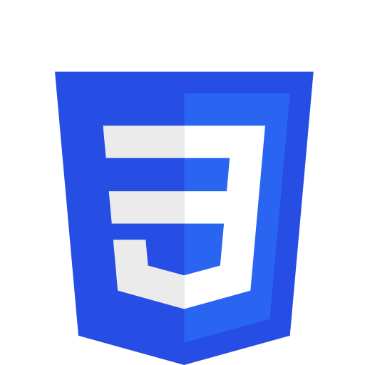
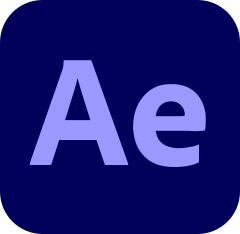

ПРИВЕТ, Я АРТЕМ, UI/UX ДИЗАЙНЕР И ВЕБ-РАЗРАБОТЧИК
Я специализируюсь на создании интуитивно понятных дизайнов и прототипов, которые улучшают удовлетворенность пользователей. Моя цель — помочь брендам достигать своих целей через эффективные дизайнерские решения и веб-разработку. Я считаю, что успешный дизайн сочетает эстетику и функциональность, делая взаимодействие пользователя с продуктом удобным и приятным. Если вы ищете дизайнера, который устраняет барьеры между пользователем и продуктом, вы обратились по адресу.
design
В своей работе я использую современные инструменты для дизайна. Figma — основной инструмент для создания интерфейсов и прототипов с удобным командным взаимодействием. Также активно применяю Adobe Photoshop для обработки графики и Illustrator для создания векторных элементов.
figma
В процессе полного изучения. Сейчас осваиваю компоненты и кнопку present
photoshop

Увлекаюсь фотошопом со школьных лет, фотошопил друзей на аватарки вконтакте. Это баловство позволило в настоящее время крутить фотокарточками как захочется
illustrator

С иллюстратором до сих пор сложные отношения, я пытаю его он пытает меня
web
Для веб-разработки я использую современные и эффективные инструменты. Основу работы составляют HTML и CSS для верстки и стилизации. Sass помогает организовать код, а Tailwind и Bootstrap ускоряют разработку адаптивных интерфейсов. Для динамических элементов применяю Vue.js.
html
Очень старый дядя, дай бог ему здоровья, шо тут можно еще сказати
css
Последний раз серьезно занимался созданием сайтов в учебные годы, наверстываю упущенной, обмазываясь флексами и гридами
js

Очень старый дядя, дай бог ему здоровья, шо тут можно еще сказати
sass

Очень старый дядя, дай бог ему здоровья, шо тут можно еще сказати
tailwind

Очень старый дядя, дай бог ему здоровья, шо тут можно еще сказати
bootstrap
Очень старый дядя, дай бог ему здоровья, шо тут можно еще сказати
vue

Очень старый дядя, дай бог ему здоровья, шо тут можно еще сказати
webpack

Очень старый дядя, дай бог ему здоровья, шо тут можно еще сказати
video
В процессе видеомонтажа я использую профессиональные инструменты. Adobe Premiere Pro — главный редактор для точного и детализированного монтажа видео. Для анимации и визуальных эффектов я применяю After Effects, а для обработки звука — Audition.
premiere pro

В студенческое время работал в сони вегасе, ленясь перекатываться на премьер, но приколы которые он умеет делать, особенно после вегаса, заставили восторгнуться
after effects
Увлекание эффектиком появилось когда перекатился на премьер. В коллекции уже есть пара прикольных заставок (⌐■_■)
audition

Этот продукт открываю крайне редко, только для рабочих целей, но навалить бассов, застрейчить диктора или почистить мусор могу
Sony Vegas

Делал на нем видосики в шараге
other experience
asd
unity

Ориентируюсь в интерфейсе, могу создать материал. Но в общем, есть опыт верстки игрового интерфейса на канвасах и uielements
manual testing

aaaaaaa
design
В своей работе я использую современные инструменты для дизайна. Figma — основной инструмент для создания интерфейсов и прототипов с удобным командным взаимодействием. Также активно применяю Adobe Photoshop для обработки графики и Illustrator для создания векторных элементов.